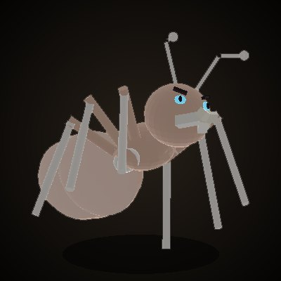

CHRONICLE ONLINE
크로니클 온라인 · 공식 정보
KO
EN
홈
새 소식
게임 가이드
인터페이스
데이터베이스
고유 시스템
커뮤니티
← 몬스터 도감
여왕 간호 개미
일반

여왕 간호 개미
여왕 간호 개미 · Queen's Nurse Ant
레벨
35
HP
4,000
경험치 / SP
0 / 0
물리 공격 / 방어
637 / 547
마법 방어
200
골드
-
출현 지역
홍옥 여왕의 방
재등장
30초
특징
비선공 · 무리 호출 · 허브 드랍
드랍
-
같은 지역 몬스터
근위 개미
·
근위대장 개미
·
여왕 호위 개미
·
홍옥 여왕
·
여왕 근위 개미